Let’s Talk
Caimber's Moby.Read is a self-administered, automatically scored assessment of oral reading fluency (ORF) in English for students in grades K–5. With about six weeks until an educational EXPO, I redesigned its demo so young students could move through it easily and stay engaged the whole way.
Design and delivery strategy, complete UI, and part of the UX
Moby's character design and animation
CEO, president, and a developer
A guided, voiced demo built for the EXPO
Flow templates reusable across every grade
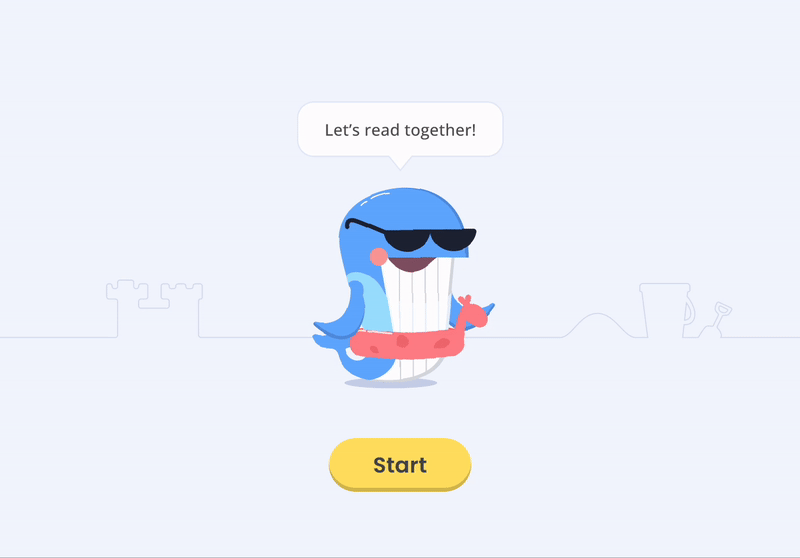
Students read word lists, sentences, and short passages out loud, then retell the passages and answer short questions in their own voice. Caimber uses automatic speech recognition (ASR) and natural language processing (NLP) technologies to automatically score student assessments.
Caimber would showcase the demo on iPads with headphones at an educational EXPO, where K–5 students would try it with their teachers or parents beside them.
With about six weeks until the EXPO and 10 hours a week to give, I aligned with the CEO on logistics, then built a delivery and implementation timeline around:
• Primary goals
• Engineering bandwidth
• Timeline limits
• ORF and speech-capture requirements
• Testing conditions at the EXPO
Before I joined, Caimber already had a basic demo. It was simple and direct, but it didn't hold young students' attention or give them enough to interact with. Every improvement had to work within the limits of the ORF software.
How I raised engagement:
• Linear, guided flows with minimal physical interaction
• A celebration at the end of each task
• Nothing that could block a student's progress
• Audio guidance throughout
To save design and engineering time, I created systemized flow templates: one reusable structure that worked for every grade.
I kept the visuals simple and direct (but engaging) so students stayed focused on the testing tasks. Micro-interactions and well-placed color guided them through the flow.
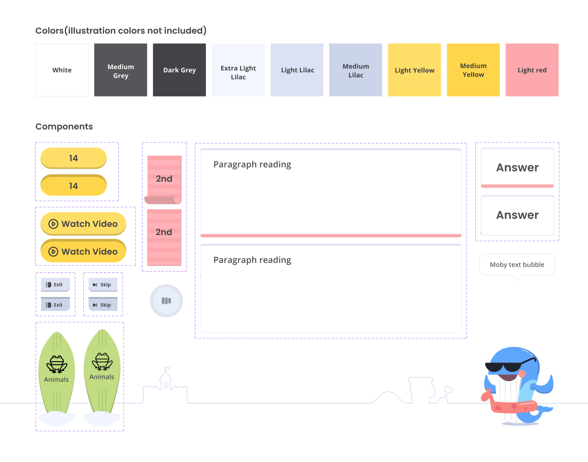
Some parts of the existing demo couldn't change because of how the tests work, such as reading orientation, word grouping, and where paragraphs break.
The original Moby character was too plain to hold a child's attention. I redesigned him with new assets that gave him more personality.
The home screen featured Moby in a series of animations to catch students' attention.
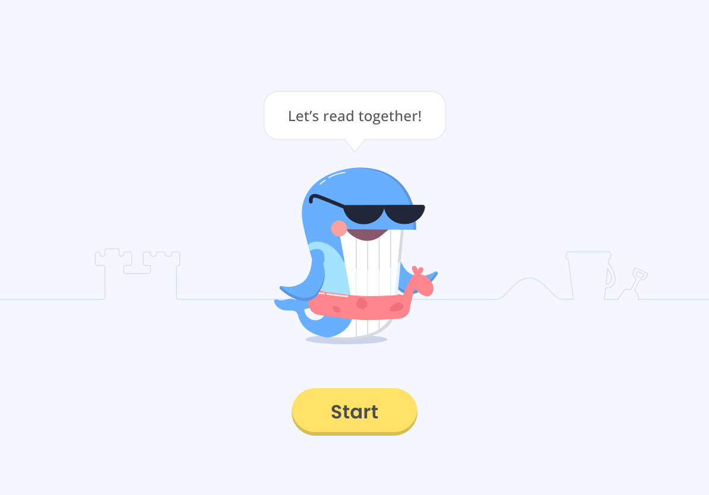
Choosing a grade loaded grade-specific content for the three tasks.
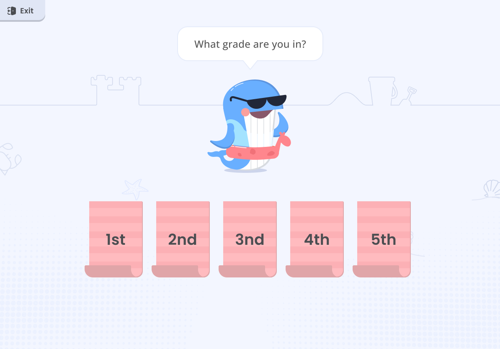
Depending on the grade, students saw a preset list of garbled words to read aloud, which tested pronunciation and comprehension.
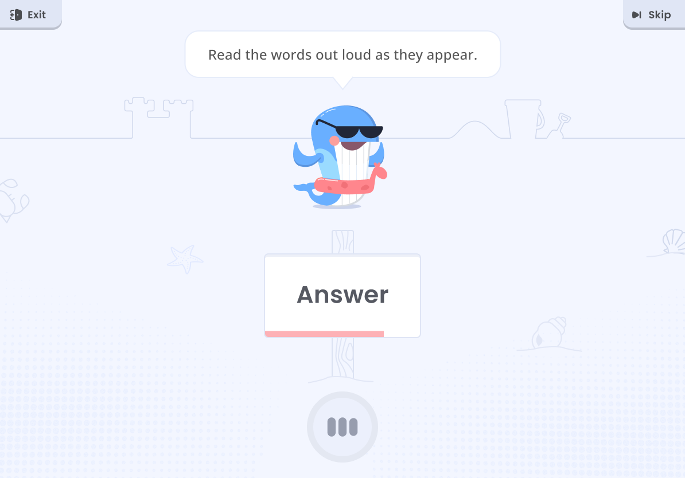
After the word list, students chose a category for the remaining tasks. Next, they read as much of a paragraph aloud as they could, which tested English fluency, speed, pronunciation, and comprehension.
Because of how the testing tools work, text layout had to follow strict rules. For paragraph reading, the formatting had to match common book paragraph styles.
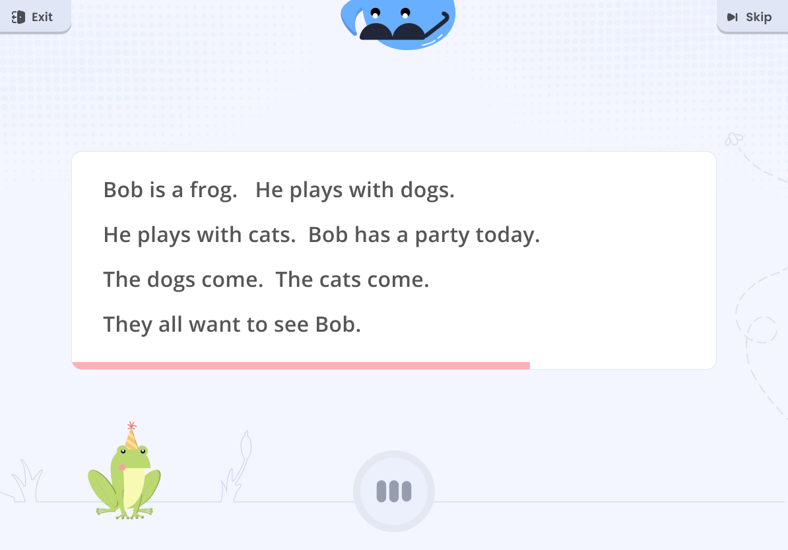
Next, students solved a math word problem in English.
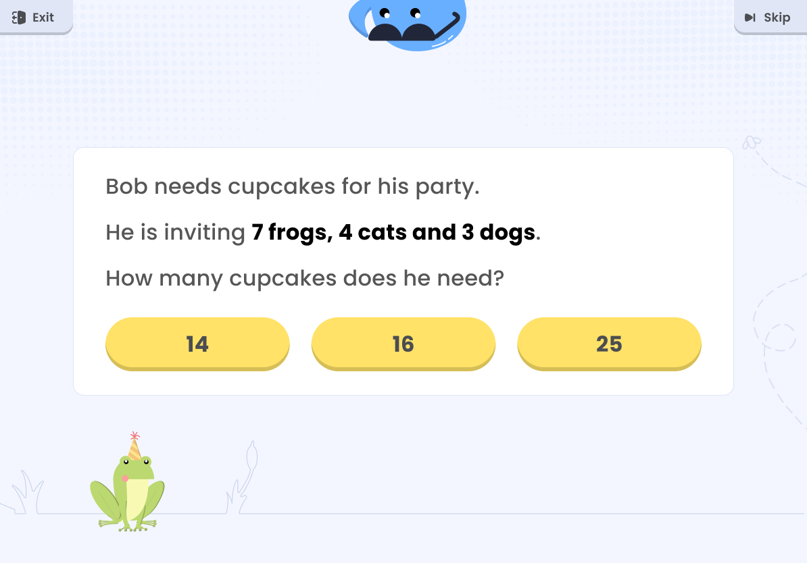
I designed a system of wrong-answer templates that covered each type of problem structure.
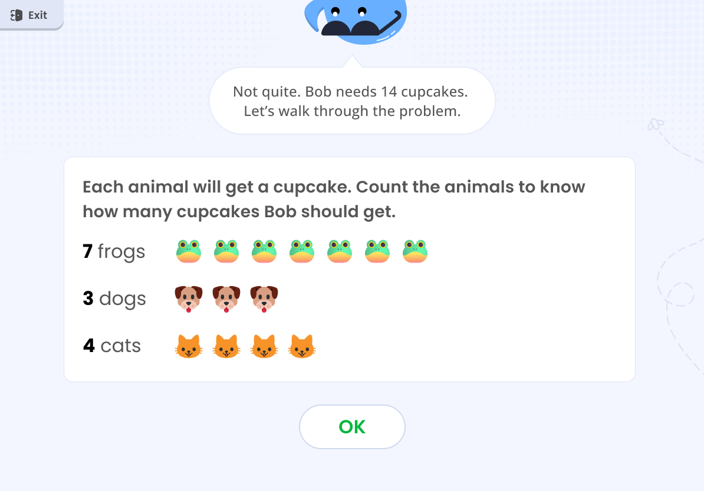
Students ended on a positive note with an educational video.
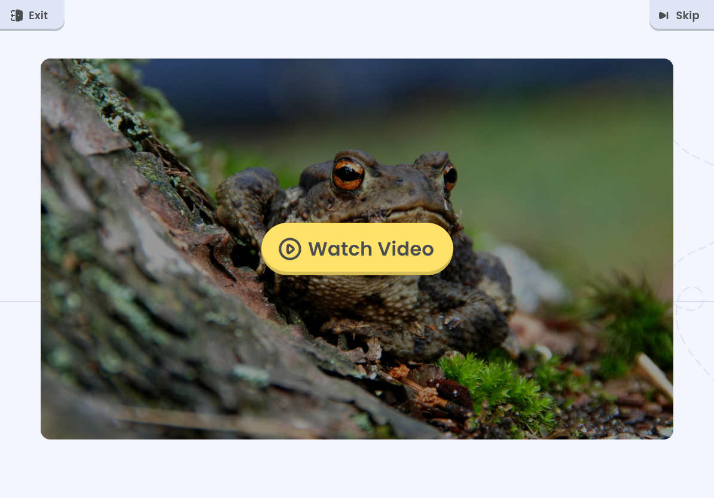
To prepare students for each upcoming task and keep the flow smooth, I set up "connector" screens between tasks.
All guidance text was voiced over. I wanted kids to be able to replay the voiceovers, but it didn't fit in the scope.
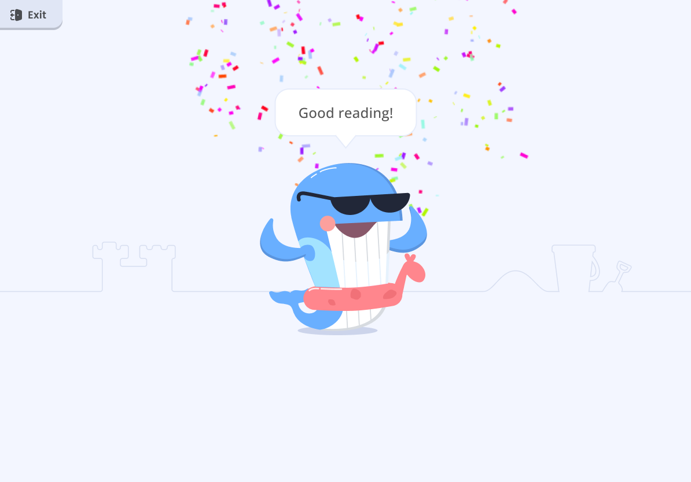
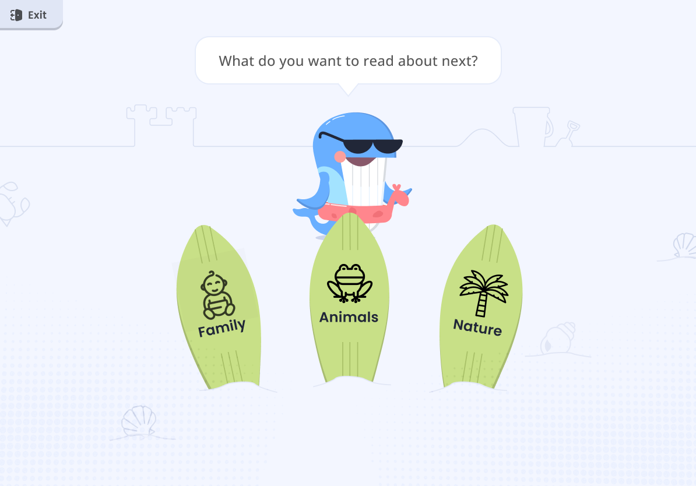
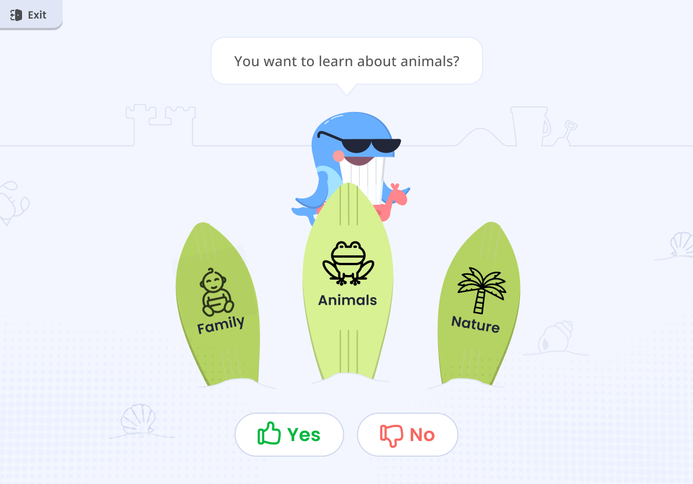
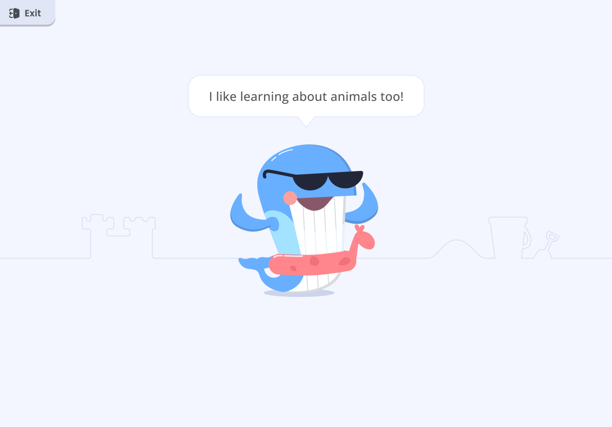
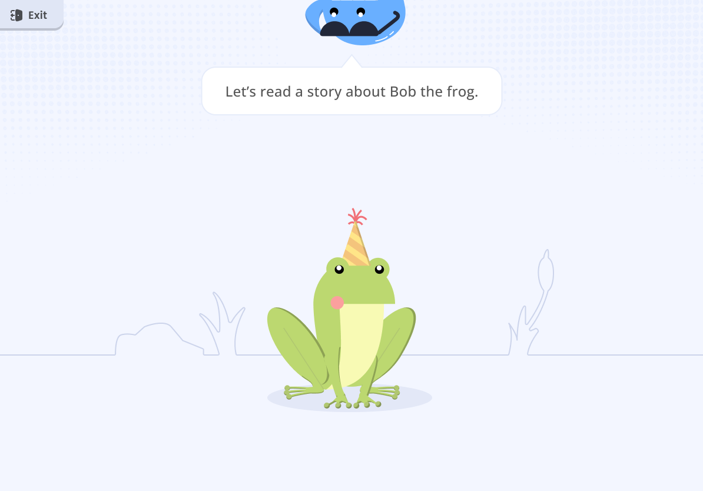
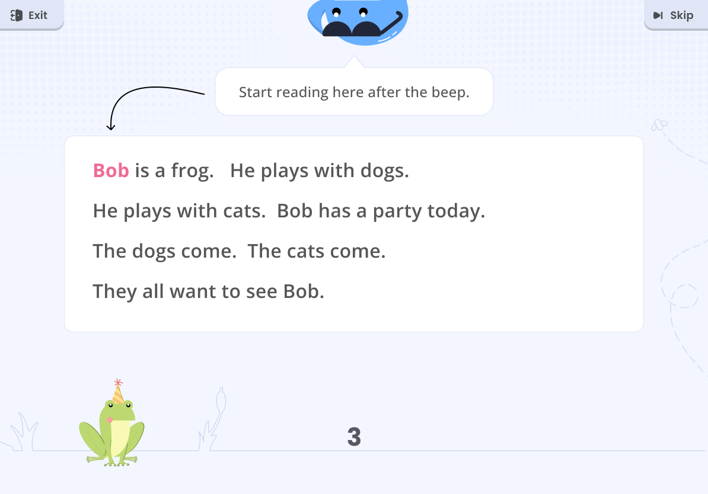
In about six weeks of part-time work, the demo went from a basic walkthrough to a guided, voiced experience a K–5 student could follow. What I delivered:
• A linear, guided flow across three reading tasks, designed within the ORF software's constraints
• Flow templates that worked for every grade, so new content didn't need new designs
• A wrong-answer template system for the math word problems
• Voiced guidance throughout, and a redesigned Moby with more personality
Next, I would make every voiceover replayable, so a student who misses an instruction can hear it again without an adult stepping in.